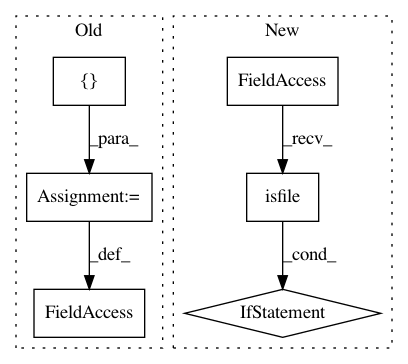

015743bbf56505b64f8ece68a1316cb817cde0bb,setup3.py,,,#,25
Before Change
("build_clib", build.has_c_libraries),
("build_scripts", build.has_scripts)]
include_dirs=["include/contrib"]
swig_opts=["-c++","-Iinclude/contrib","-py3"]
setup(name="amsc",
version="0.0",
description="A library for computing the Approximate Morse-Smale Complex (AMSC)",
After Change
CURR_DIR = os.path.dirname(os.path.realpath(__file__))
HERD_TRUNK_DIR = os.path.join(os.path.dirname(os.path.realpath(__file__)),"..")
CROW_SUBMODULE = os.path.join(CURR_DIR,"crow")
if os.path.isfile(os.path.join(CROW_SUBMODULE,"Makefile")):
CROW_DIR = CROW_SUBMODULE
else:
CROW_DIR = os.path.join(HERD_TRUNK_DIR,"crow")
BOOST_INCLUDE_DIR = os.path.join(CROW_DIR,"contrib","include")
RAVEN_INCLUDE_DIR = os.path.join("include","contrib")
// We need a custom build order in order to ensure that amsc.py is available
In pattern: SUPERPATTERN
Frequency: 4
Non-data size: 6
Instances
Project Name: idaholab/raven
Commit Name: 015743bbf56505b64f8ece68a1316cb817cde0bb
Time: 2017-05-30
Author: joshua-cogliati-inl@users.noreply.github.com
File Name: setup3.py
Class Name:
Method Name:
Project Name: recipy/recipy
Commit Name: 30a291416446ee95a349a2e292e0ee88645965a2
Time: 2016-09-21
Author: michaelj@epcc.ed.ac.uk
File Name: integration_test/test_recipyrc.py
Class Name: TestRecipyrc
Method Name: setup_method
Project Name: SpiNNakerManchester/sPyNNaker
Commit Name: 73162ce7ca689cd10f67b823f54d3fbf81e8ee91
Time: 2021-02-25
Author: donal.k.fellows@manchester.ac.uk
File Name: doc/source/conf.py
Class Name:
Method Name:
Project Name: Pinafore/qb
Commit Name: eb979ca370c60cdb6318141e097be8dc1c04b8e1
Time: 2016-02-29
Author: jordanbg@gmail.com
File Name: util/human_buzzer.py
Class Name:
Method Name: